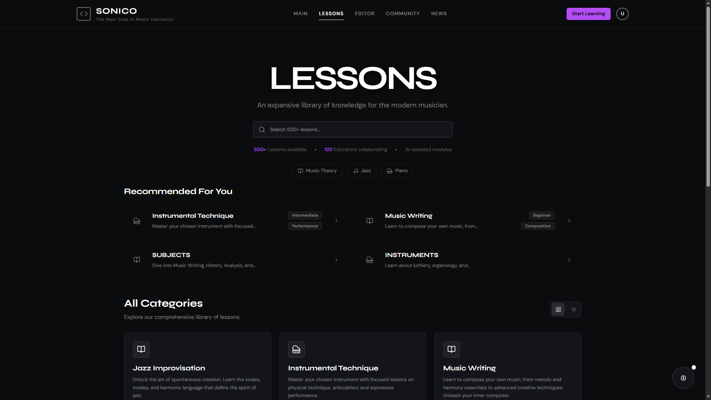
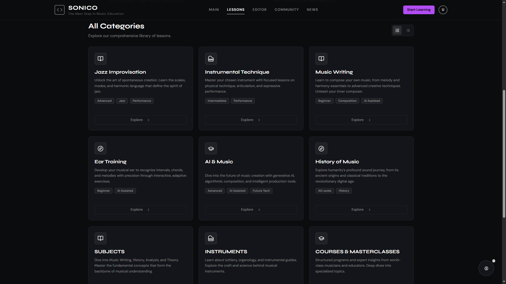
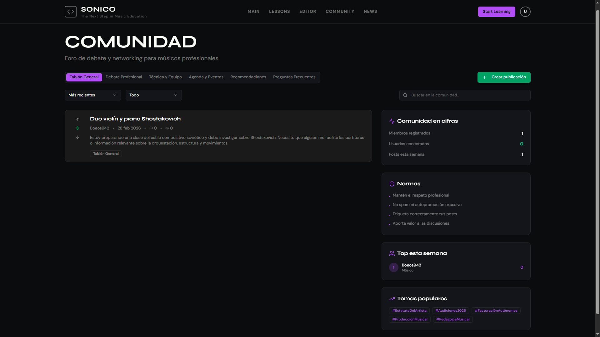
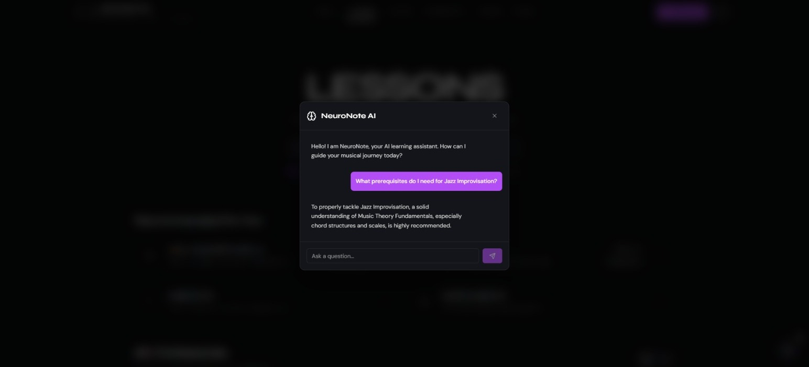

Aprende a tu ritmo con lecciones adaptadas por IA, construye tu perfil de artista, conecta con otros músicos y encuentra oportunidades reales para tocar. Tanto si empiezas desde cero como si llevas años en los escenarios.
Aprender música siempre ha sido caro, fragmentado y difícil de convertir en carrera. Sonico lo cambia: centraliza el aprendizaje, el networking y las oportunidades profesionales en un único lugar accesible para todos.
Lecciones de teoría musical e instrumento generadas y ajustadas por IA según tu nivel, ritmo y objetivos. Tanto si nunca has tocado una nota como si llevas años practicando.
La plataforma construye automáticamente tu perfil musical a partir de tu progreso. Un CV artístico vivo, siempre actualizado, que puedes presentar para abrirte puertas profesionales.
Encuentra músicos que estudian los mismos géneros o instrumentos compatibles con el tuyo. Forma grupos, colabora en proyectos y construye tu red desde la plataforma.
Accede a nuestro foro de empleo musical donde proyectos y salas buscan músicos. Aplica directamente con tu perfil de Sonico. Esta sección ya está disponible en la versión piloto.
Si enseñas, Sonico es tu herramienta: crea cursos, prepara tus clases del conservatorio y mentoriza alumnos. La calidad docente, sin barreras ni burocracia.
Desde el autodidacta curioso hasta el aula de un conservatorio. Sonico quiere estar en cada etapa del músico, apoyando tanto el aprendizaje informal como los estudios reglados.
Sin configuraciones complicadas, sin compromisos. Entras, te presentas un poco y Sonico hace el resto.
Crea tu cuenta en menos de un minuto. Sin tarjeta de crédito, sin letra pequeña. Sonico es gratuito y queremos que siga siéndolo el mayor tiempo posible.
¿Qué instrumento tocas o quieres aprender? ¿Cuánto llevas? ¿Qué quieres conseguir? Con esa información, la IA diseña tu primer camino de aprendizaje personalizado.
Sigue tus lecciones, explora el foro de empleo, busca músicos para colaborar o prepara tus clases como docente. Tu perfil de artista se va construyendo solo conforme avanzas.
Cuando estés listo —o aunque creas que no lo estás aún—, usa tu perfil para aplicar a oportunidades reales. Sonico te ayuda a llegar al escenario que mereces.
Una muestra de lo que encontrarás: lecciones interactivas, tu perfil de artista y el foro de empleo musical.

Lessons landing
Lessons categories listed as a grid
Community landing
AI NeuronoteAhora mismo estamos en beta privada. Si quieres ser de los primeros en entrar, apúntate a la lista de espera desde el botón de abajo y te avisamos en cuanto abramos más plazas.
Sí, el acceso a Sonico es gratuito. Estamos valorando distintos modelos para sostener el proyecto a largo plazo —donaciones, suscripciones opcionales…— pero nuestra prioridad es que la accesibilidad no se pierda nunca.
Para todos los niveles. Desde alguien que nunca ha tocado un instrumento hasta un músico profesional que quiere encontrar trabajo o conectar con otros artistas. Las lecciones se adaptan gracias a la IA.
Absolutamente. Sonico tiene una vertiente específica para docentes: puedes crear tus propios cursos, mentorizar alumnos y usar la plataforma como herramienta de apoyo para tus clases en el conservatorio u otras instituciones.
El foro de empleo musical es una de las partes más avanzadas del proyecto. Permite a músicos encontrar oportunidades de trabajo y a empleadores localizar talento. Ya es funcional en la versión piloto actual.
La beta es gratuita y las plazas son limitadas. Apúntate ahora y ayúdanos a construir la plataforma que la música merece.